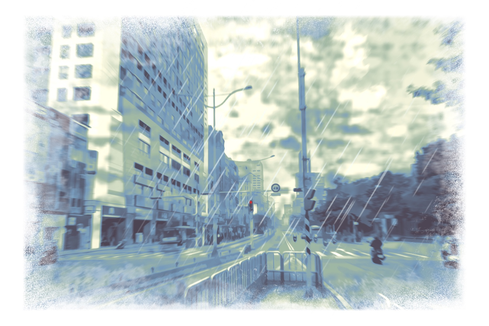

在人工智慧領域中，除了智能層面，情感層面也是一大重點。對以陪伴或服務為主要功能的語音助理， 能運用對話同理並理解使用者的情緒是非常有利的，不僅可以避免刺激使用者、 造成使用者的情緒負擔，還可以讓使用者更願意敞開心扉，了解使用者真正的心事，提供更準確的陪伴服務。 然而，這種情感向的語料庫至今仍供不需求。 因此，團隊希望透過創作大量富技巧性對話策略供機器人學習，以期未來人工智慧能更貼近人類內心，提供更好的服務。
查看更多⋯⋯
一個普通的演講者，一個普通的菜鳥職員，一次普通的會議，一個猝不及防的意外。
查看更多⋯⋯
我們來玩一個遊戲。
在 Linebot 裡面，我們設計了一些對話體驗，請使用者掃瞄旁邊的二維碼，或以 ID 搜尋帳號加入好友。 加入好友後，機器人即會發送自我介紹訊息，跟隨只是就可以開始對話嘍！
對話中，使用者可以透過按鍵選擇不同的回覆， 不同的選擇將會開啟不同的對話線，若發現沒有選項了，就代表一條完整的對線已經結束了， 這時，如果還想看看其他對話線是如何開展的話，只要再輸入一次「未聞其名在嗎」，就可以重新開始一次新的對話。
＊ 小提醒，有時候 Linebot 要想一下該怎麼回覆，請給他一點時間思考一下喔～
ID: @638jgwpn